Documentation & Help
Getting Started
- Download MAME (Windows command-line version) and extract it (e.g.
c:\mame) - Optionally download catver.ini, controls.ini, and history.dat into the MAME directory
- Download and install MaLa
- Run MaLa — the options dialog opens automatically
- Point the MAME executable to your
mame.exe - MaLa creates
mame.iniandmame.xmlif not found - Enter a ROM path and snap path, close the dialog, and refresh the game list when prompted
To access more options at any time: right-click on the background to open the popup menu.
Default Keys (v1.0)
MaLa shift key: LCtrl (Player 1 Button 1)
| Action | Key | Arcade equivalent |
|---|---|---|
| One game up | ↑ | Player 1 Up |
| One game down | ↓ | Player 1 Down |
| x games up | Shift+↑ | P1 B1 + Up |
| x games down | Shift+↓ | P1 B1 + Down |
| Start game | 1 | Start 1 |
| Start random game | Shift+1 | P1 B1 + Start 1 |
| Exit MaLa | Esc | Start 1 + Start 2 |
| Open/close menu | 2 | Start 2 |
| Previous game list | ← | Player 1 Left |
| Next game list | → | Player 1 Right |
| Previous emulator | Shift+← | P1 B1 + Left |
| Next emulator | Shift+→ | P1 B1 + Right |
| Show info window | LAlt | Player 1 Button 2 |
| Switch info window | Space | Player 1 Button 3 |
All keys can be redefined in the options dialog on the controller tab sheet.
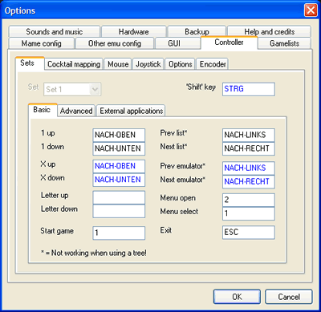
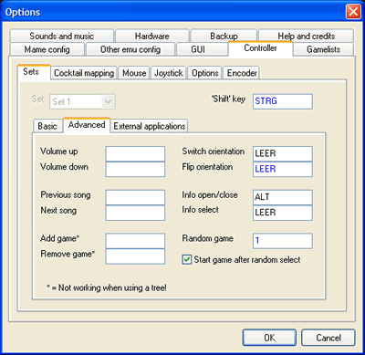
Controller Setup
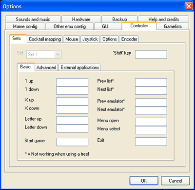
To delete predefined settings, right-click on the edit fields.
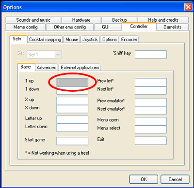
Left-click to map a controller to a MaLa function — the colour changes to grey while waiting for input. Move a joystick or press a button.
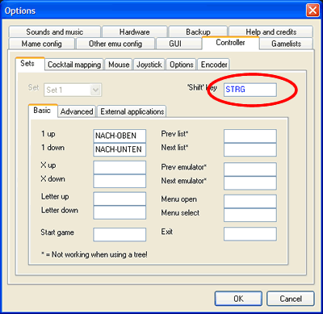
The Shift key works like the keyboard Shift. Shifted keys appear in blue and only activate in combination with the Shift key.
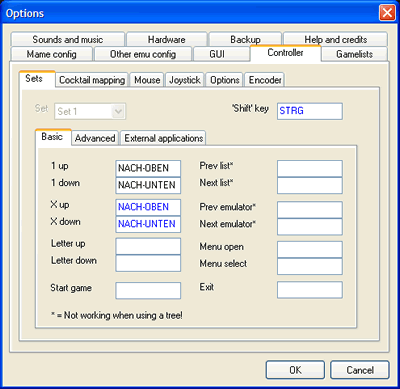
To set a shifted key, click an edit field and press Shift + another key.
MAME Configuration
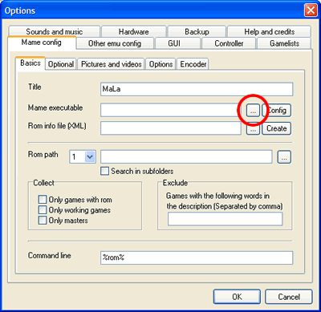
Select the MAME executable via the '...' button. MaLa extracts the version and displays it in the title field.
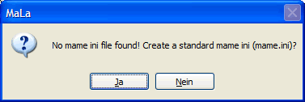
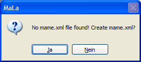
If no ini or XML ROM info file is found, MaLa prompts to create them.
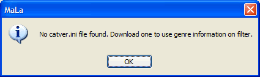
MaLa uses optional files (catver.ini, controls.ini, history.dat) if placed in the MAME directory.
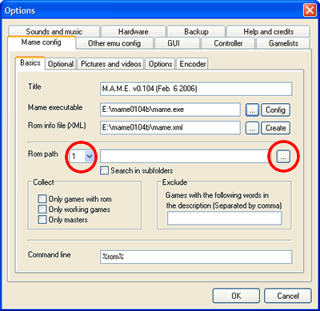
Enter up to 3 ROM file locations. Only games with rom shows only games with ROMs present. Only working games hides bad-status games. Only master hides clones.
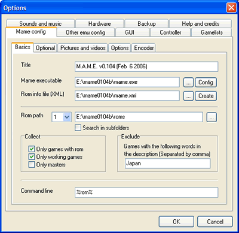
The exclude parameter excludes games by description — e.g. enter 'japan' to exclude all Japanese versions.
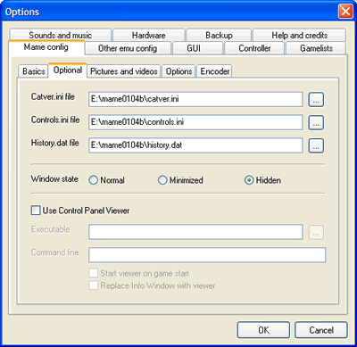
The Optional tab lets you specify locations for optional ini files and configure window state.
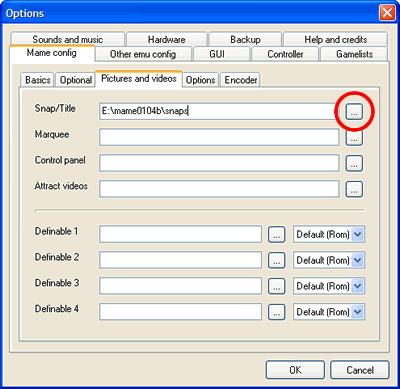
Enter a valid path for pictures used by your layout. Close with OK.
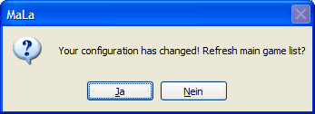
MaLa will ask you to refresh the game list — yes is a good choice!
Emulator Configuration
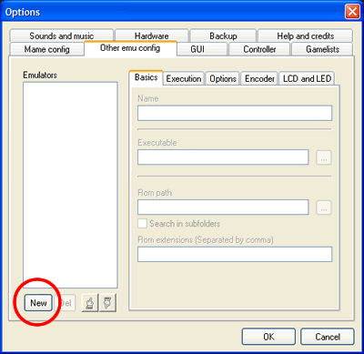
Click 'New' to create a new emulator.
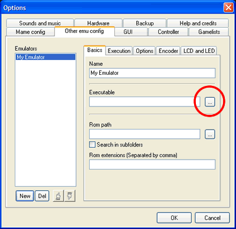
Choose the emulator executable via '...'.
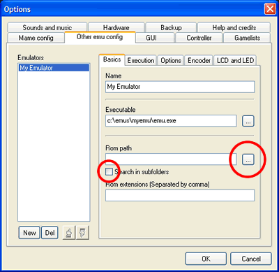
Select a ROM path. MaLa collects all extensions found there and adds them to the rom extensions field.
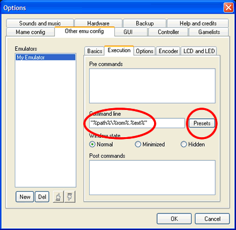
Define how MaLa calls the emulator using these placeholders:
| Placeholder | Meaning |
|---|---|
| %path% | Full path of ROM file |
| %rom% | Name of ROM file |
| %parent% | Name of parent ROM file |
| %ext% | Extension of ROM file |
Click Presets to paste default or emulator-specific command lines.
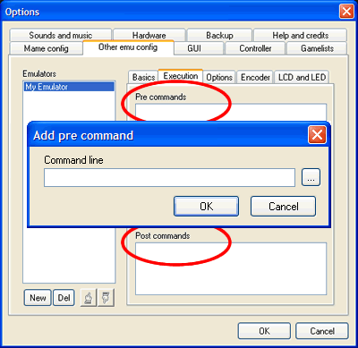
Add pre and post commands. Right-click list boxes to add/edit/delete/move items.
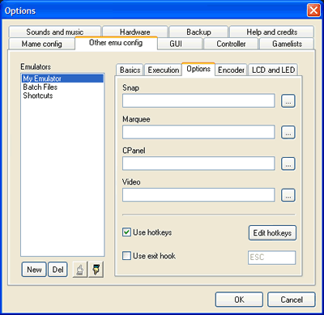
The Options tab lets you add folders for pictures and videos and define hotkeys to control the emulator.
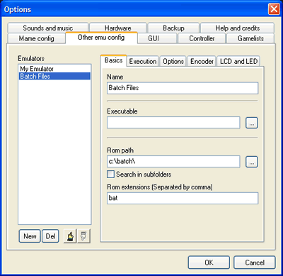
To run batch files, leave the emulator executable empty and use batch files as the rom extension.
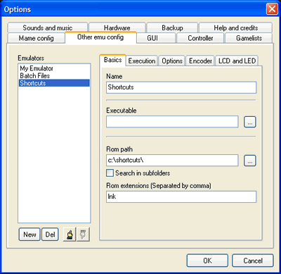
For PC game shortcuts, use 'lnk' as the ROM extension and %rom% only in the command line.
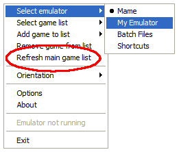
After closing options, select the new emulator from the MaLa menu then use 'Refresh main game list'.
Layout Switch & Naming
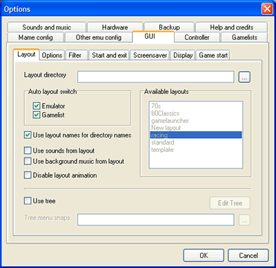
Enable Auto layout switch to use different layouts per emulator/list, naming them as follows:
MAME — shooters: mame_shooter.mll
MAME — all lists: mame.mll
C64 — all games: c64_all games.mll
Jukebox: jukebox.mll
If a layout for the selected list is not found, MaLa tries the emulator layout, then the default standard.mll.
MaLa Tree Snap Naming
Format: menutitle_menunode.ext (png, jpg, gif or bmp)
mala menu_arcade.ext mala menu_n64.ext mala menu_jukebox.ext
Menu: Nintendo 64 / nodes Favorite, All Games:
nintendo 64_favorite.ext nintendo 64_all games.ext
Command Line Placeholders
| Placeholder | Available in | Meaning |
|---|---|---|
| %path% | MAME, Emulator, Pre/Post | Full path of ROM file |
| %rom% | All + CPViewer | Name of ROM file |
| %parent% | All + CPViewer | Name of parent ROM file |
| %ext% | MAME, Emulator, Pre/Post | Extension of ROM file |
| %config% | Encoder programming | Config file name with extension |
MaLa Game List Editor
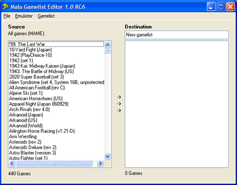
Left side shows all games for the selected emulator. Right side shows the game list being edited.
Adding Games
- Double-click a game in the source list
- Drag and drop games from source to destination
- Select and click the arrows between the lists
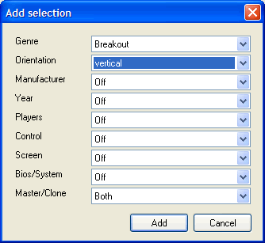
Add selection (MAME only) — add by genre, control type etc.
Editing Games
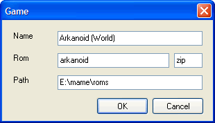
Double-click a game in the destination to edit its name, ROM path and extension.
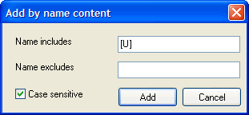
Add by name content — add games with specific substrings e.g. [U] or (Japan).
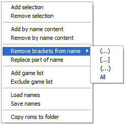
Editing Games
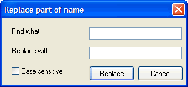
Replace part of name — search and replace parts of game names in one step.
Removing Games
Right-click destination list → Delete. Or use Remove selection (MAME only) to remove by genre/control type.
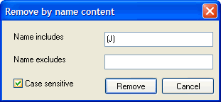
Remove by name content — delete all games with a specific substring in one step.
Saving Names
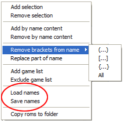
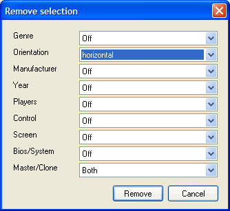
Save all name edits to a file so you can reload and rematch names on new game lists.
MaLa Hardware Setup
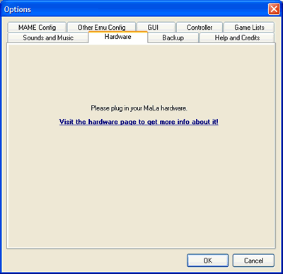
Plug in MaLa Hardware while MaLa is running, or before starting MaLa.
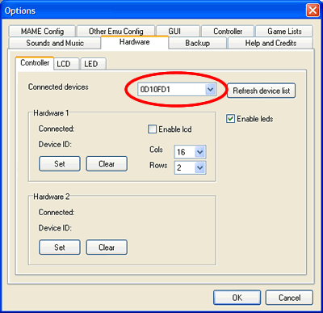
The tab sheet shows all connected boards. Click 'Refresh device list' to update.
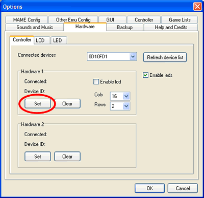
Click 'Set' to connect a hardware ID to a slot. Only the first slot can have an LCD.
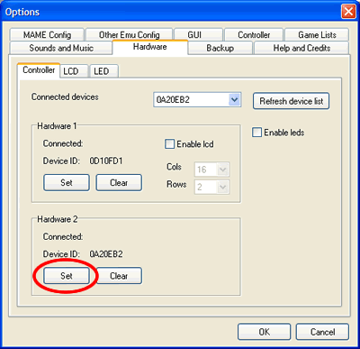
For LCD/LED16 boards, enable LCD use and set your LCD type (columns and rows).
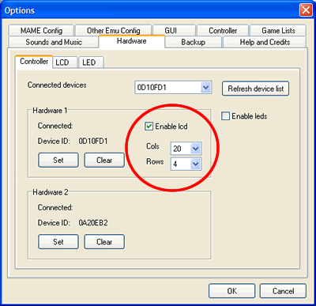
Enable LEDs to light up your buttons.
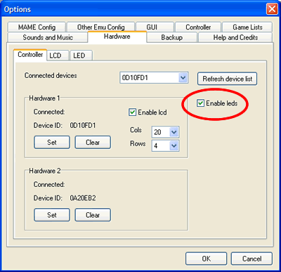
Restart MaLa — you should see a greeting text on the LCD.
Hotkeys
Convert, block and send keystrokes to a running emulator. For example, map Esc to Alt+F4 to close the emulator.
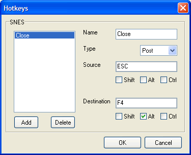
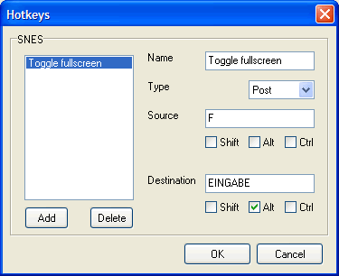
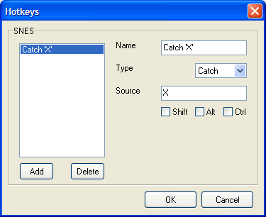
Filter
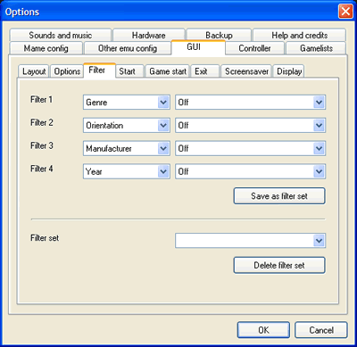
Use up to 4 filters to control which games appear in the game list. Access from the MaLa menu at any time.
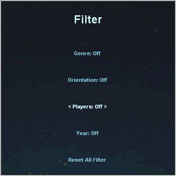
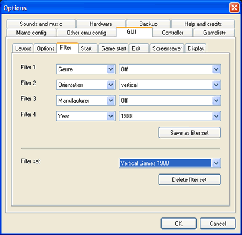
Filter sets can be saved and accessed from the MaLa menu.
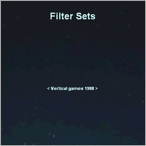
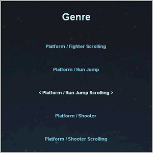
Available criteria: Genre · Orientation · Manufacturer · Year · Player count · Control type · Screen type · Bios · Master/Clone
MaLa File Extensions
MaLa Tree
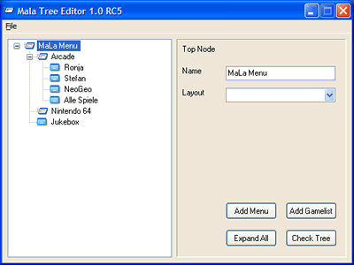
Create an emulator/game list tree with the MaLa Tree tool. Combined with nice graphics in a menu layout this produces great results.
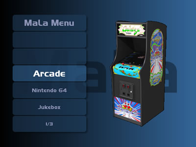
Arcade menu examples:
Controller Detection
Detection is triggered by the joystick buttons allocated to 1 up, 1 down and start. MaLa rotates to the corresponding side automatically and can switch game lists at the same time. Useful for cocktail tables.
FAQ
Help Forums
The primary English-language MaLa support forum.
The original German MaLa forum. English posts welcome.